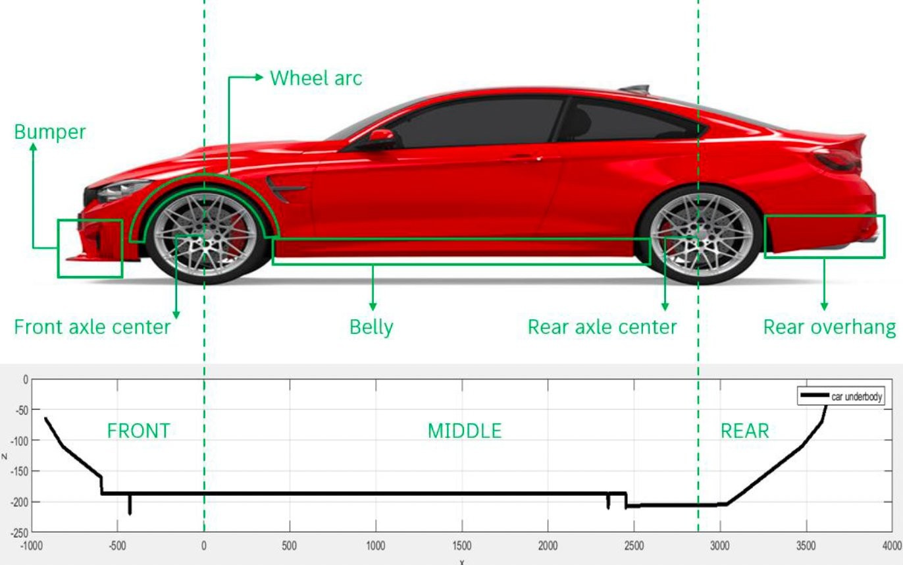
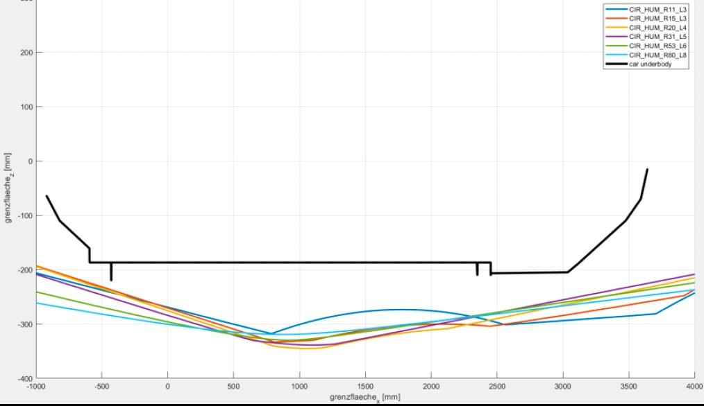
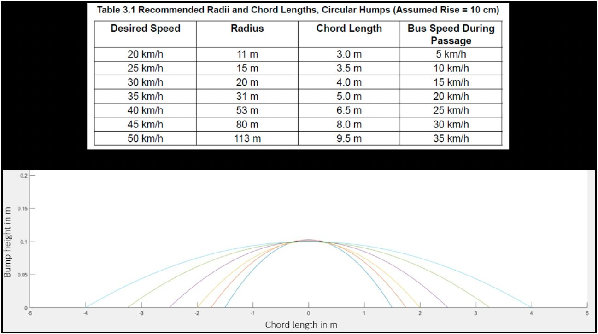
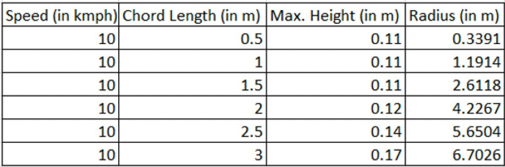

§ Project I · Industry R&D01
Vehicle Underbody Speed-Bump Envelope.
Defining a dimensional limit envelope for speed bumps that the entire passenger-car underbody can clear without contact — across three critical zones and a batch of IRC-standard profiles.
Problem01
Speed bumps in India vary wildly from the IRC 99 standard; a vehicle's underbody, bumpers and belly are vulnerable in ways the nominal bump geometry doesn't capture. The task: establish a single envelope that validation teams can use as a pass/fail check early in the design cycle, before hardware exists.
Approach02
- Decomposed the underbody into three zones — front overhang (bumper to front axle), belly (between axles), rear overhang (rear axle to bumper) — each with independent geometric failure modes.
- Built a Simpack multibody model of the car traversing parametrised IRC bumps; swept bump height, length and approach/departure angles in batch runs.
- Generated the Grenzfläche (limit-surface) plot for each zone in MATLAB, then intersected the three surfaces into a unified envelope.




3 carlines
Validated across vehicle platforms, three load cases
10–20km/h
Traversal speed range swept in batch simulation
0 prototypes
Pipeline replaced physical prototype testing for this stage
Deliverable03
- Delivered a fully validated dimensional limit envelope for speed bumps across 3 vehicle carlines, 3 load cases, and speeds of 10–20 km/h.
- The automated simulation pipeline replaced the need for physical prototype testing, cutting validation time and cost significantly.
- Methodology was adopted as a reusable framework for future vehicle ground-clearance validation at MBRDI.